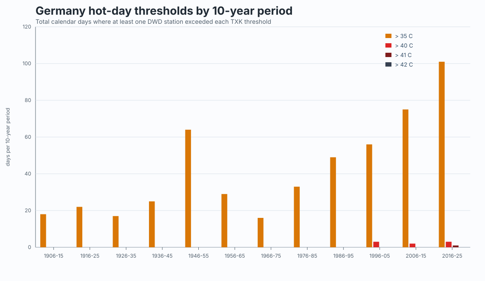
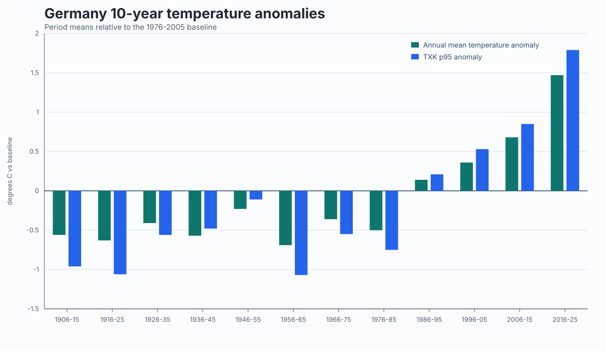
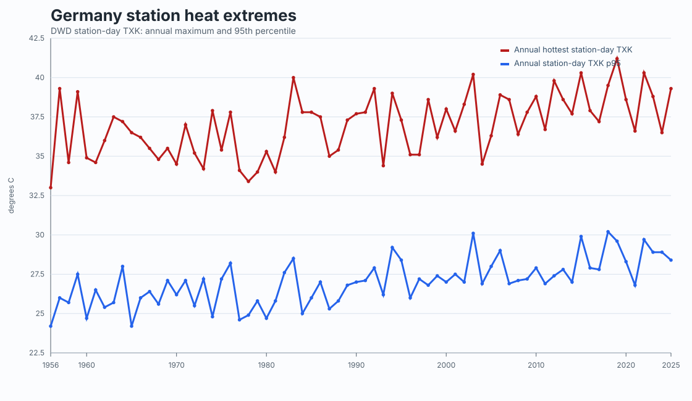
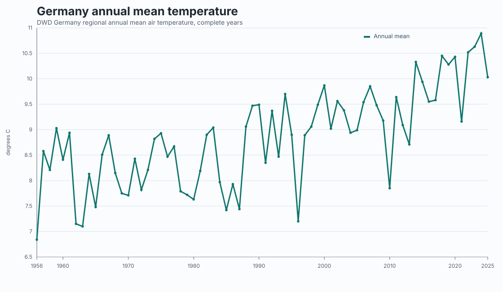
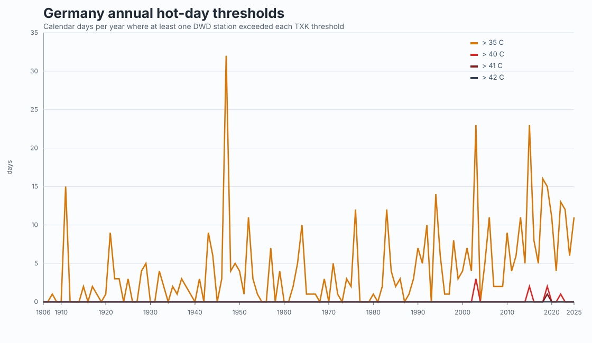

DWD Climate Data Center analysis
Germany temperature trends, 1906-2025
Interactive annual and 10-year heat metrics computed from public DWD data. The full dataset starts in 1906; charts open on 1956-2025 by default.
Hot-day thresholds by 10-year period
Compare periods from 1906 onward, with one bar per threshold. Use the legend to isolate 35, 40, 41, or 42 C.
Annual heat extremes
Zoom, pan, or use the range buttons. The full series is loaded from 1906, while the initial view starts in 1956.
Annual hot-day thresholds
Calendar days per year where at least one DWD station exceeded each daily maximum temperature threshold.
Annual mean temperature
DWD Germany-wide annual mean air temperature, shown separately from station extremes.
Static period chart
SVG export of the 10-year hot-day threshold comparison.

Static anomaly chart
SVG export of 10-year temperature anomalies.

Annual station heat extremes
Annual hottest station-day maximum and annual 95th percentile of station-day maximum temperature.

Annual mean temperature
DWD Germany-wide regional annual mean air temperature.

Annual hot-day thresholds
Year-by-year comparison of days exceeding 35, 40, 41, and 42 C.

Methodology
Germany-wide annual mean temperature comes from DWD's regional annual air-temperature series. Station heat-extreme metrics are computed from DWD daily KL observations using TXK, the daily maximum air temperature.
The 10-year chart uses fixed periods from 1906-15 through 2016-25. A day above a threshold is counted once per calendar date if at least one included station exceeds that threshold.
Station coverage changes over time, so early-period extreme counts are best read as observed station-network counts rather than a perfectly homogeneous national climatology.
Latest 10-year period: 2016-25, mean annual temperature 10.15 C, TXK p95 28.65 C.